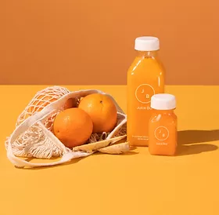
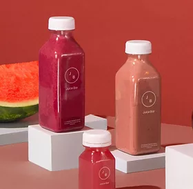
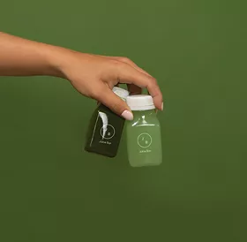

Get 10% off your first Online Order
Try nowWhat Makes Us Different
Locally Sourced
In the midst of our daily lives, we must find the juice to nourish our creative souls. Let your creative juices flow and don't be afraid to take chances! Breakfast without orange juice is like a day without sunshine. If life gives you lemons, make some kind of fruity juice.
100% Natural Ingredients
It's true that 100% fruit juice is a good source of nutrients like vitamin C and potassium. ... Juice also doesn't contain the same fiber and phytonutrients that raw fruits have. That's why many experts recommend sticking to one juice serving per day.
Just Picked Freshness
They say juicing can reduce your risk of cancer, boost your immune system, remove toxins from your body, aid digestion and help you lose weight. However, there's no scientific evidence that extracted juices are healthier than the juice you get by eating the fruit or vegetable itself.
Boosting Immunity the Way Nature Intended
Fruit juices vary in nutritional value, but most have a variety of health benefits. They contain various antioxidants that help reduce the risk of certain health issues and vitamins that help the body function well. Some fruit juices also help combat problems, such as constipation, while cranberry juice can help prevent UTIs. Some fruit juices are also high in sugar and calories, meaning people should avoid consuming too much juice. Too much sugar and calories can lead to weight gain, type 2 diabetes, and heart disease.
Choose Your Wellness Path
Pure Hydration with Cold Pressed Juices
People can drink juice as part of a healthy diet and count it toward their daily calorie intake. The best type to choose is 100% pure juice, as it avoids any added sugars, sweeteners, or colorings.
Soft & Creamy Organic Smoothies
People can purchase juice in cans, bottles, and cartons. A person can also use a hand juicer for citrus fruits or an electric centrifugal or masticating machine for other fresh fruit and vegetables
The Power of Wellness Shots
Although pure fruit juice does not contain added sugars such as those in sweetened drinks. It does have fructose, which is a naturally occurring sugar.

Discover Our Special Cleanse Kit
Juices can provide essential vitamins, minerals, and antioxidants. Drinking a serving of juice might contribute to a person’s recommended daily intake of fruits and vegetables.
Get Juice Bar
01
Local Delivery
The goodness of nature,Filled with nutrients, Packed with essentials, The freshness of fruits.Closer to nature
02
In Store Pick Up
The taste of nature.Your body deserves the goodness. Treat yourself
03
Curbside Pick Up
Each sip is healthy, Goodness in every sip